De la regresión lineal a LoRA
Etapa 1
1805–1970 · Fundamentos estadísticos y primeros modelos
Etapa 2
1980–2000 · Algoritmos clásicos y consolidación
Etapa 4
2012–2017 · Aprendizaje profundo
Etapa 5
2017–hoy · Transformers y modelos fundacionales
Cada algoritmo va en el año de la publicación que lo estableció; los antecedentes y los hitos posteriores están en su diapositiva. Clic en un nombre para ir a su diapositiva.
1805Regresión lineal
Adrien-Marie Legendre publica los mínimos cuadrados en 1805; Carl Friedrich Gauss, en 1809. Francis Galton le da el nombre de «regresión» en 1886.
Modela una variable como una combinación lineal de otras: busca la recta, o el plano, que deja la menor suma de errores al cuadrado.
Por qué importa: es la base de la predicción estadística y de muchos modelos modernos; cada neurona de una red empieza con una combinación lineal.
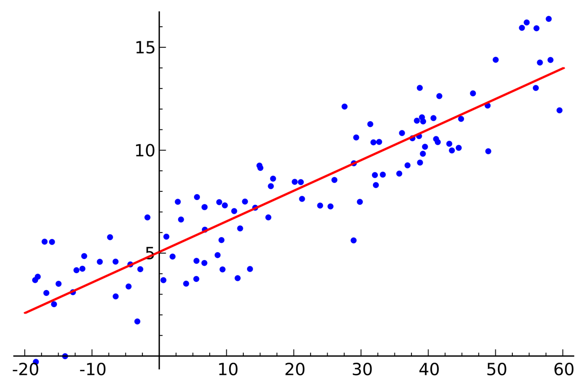

Legendre (1805), Nouvelles méthodes pour la détermination des orbites des comètes · Galton (1886), Journal of the Anthropological Institute 15.
1901Análisis de componentes principales (PCA)
Karl Pearson lo propone en 1901; Harold Hotelling lo desarrolla y le da el nombre en 1933.
Transforma las variables originales en componentes ortogonales, ordenados por la varianza que explican: los primeros resumen casi toda la información.
Por qué importa: reducción de dimensionalidad, visualización de datos con muchas variables y extracción de características.
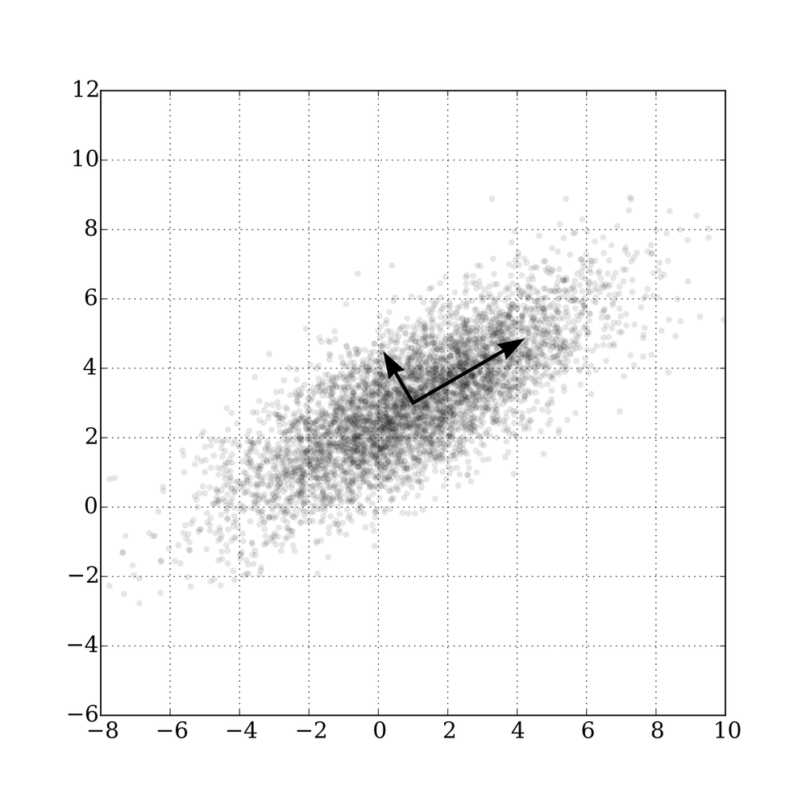

Pearson (1901), Philosophical Magazine 2(11) · Hotelling (1933), Journal of Educational Psychology 24(6).
1951k vecinos más cercanos (KNN)
Evelyn Fix y Joseph Hodges lo proponen en 1951, en un informe para la Fuerza Aérea de Estados Unidos; Thomas Cover y Peter Hart acotan su error en 1967.
Para clasificar un caso nuevo, busca los k ejemplos más cercanos y gana la clase más frecuente entre ellos; para estimar un número, los promedia.
Por qué importa: es el fundamento del aprendizaje basado en instancias y en la geometría de los datos: no construye un modelo, guarda los ejemplos y mide distancias.
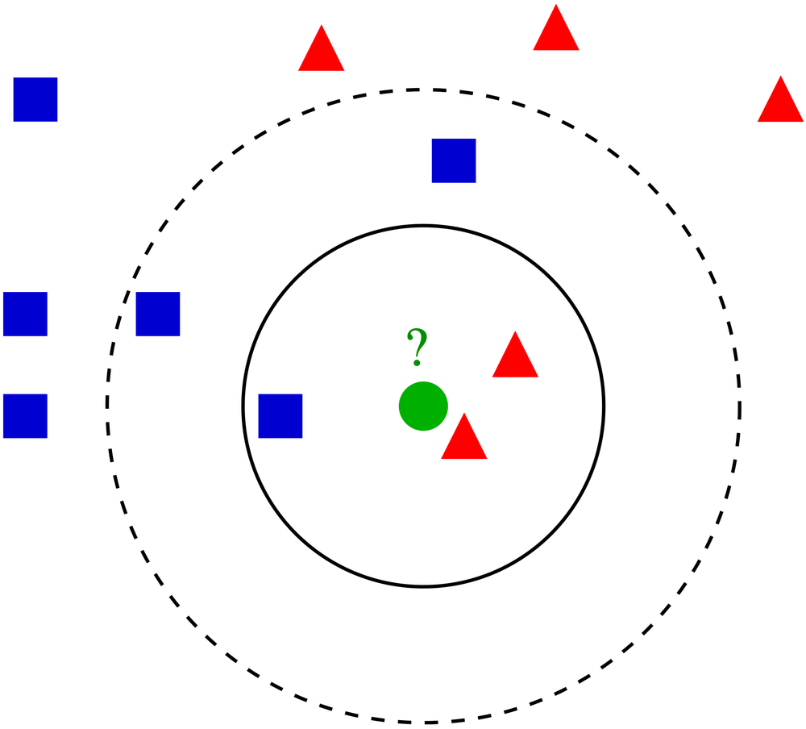

Fix y Hodges (1951), informe 4 de la USAF School of Aviation Medicine; reimpreso en International Statistical Review 57(3), 1989 · Cover y Hart (1967), IEEE Transactions on Information Theory 13(1).
1957K-medias (k-means)
Stuart Lloyd lo escribe en Bell Labs en 1957, aunque se publica en 1982; James MacQueen le da el nombre en 1967.
Agrupa los datos en k grupos: asigna cada punto al centroide más cercano, mueve cada centroide al promedio de su grupo y repite hasta que nada cambia.
Por qué importa: es uno de los algoritmos más usados del aprendizaje no supervisado.
En el cursoSesión 6, charla de cierre: el aprendizaje sin etiquetas.


Lloyd (1982), IEEE Transactions on Information Theory 28(2), memorando de Bell Labs de 1957 · MacQueen (1967), Proceedings of the 5th Berkeley Symposium 1.
1958Perceptrón
Frank Rosenblatt, en el Laboratorio Aeronáutico de Cornell: un informe en 1957 y el artículo en 1958. El Mark I Perceptron fue la máquina construida para probarlo.
Uno de los primeros modelos de red neuronal artificial. Introdujo la idea de aprender los pesos a partir de ejemplos, con una regla de actualización: cuando se equivoca, mueve los pesos hacia la respuesta correcta.
Por qué importa: es el precursor del aprendizaje profundo.
En el cursoSesión 5, charla inicial.
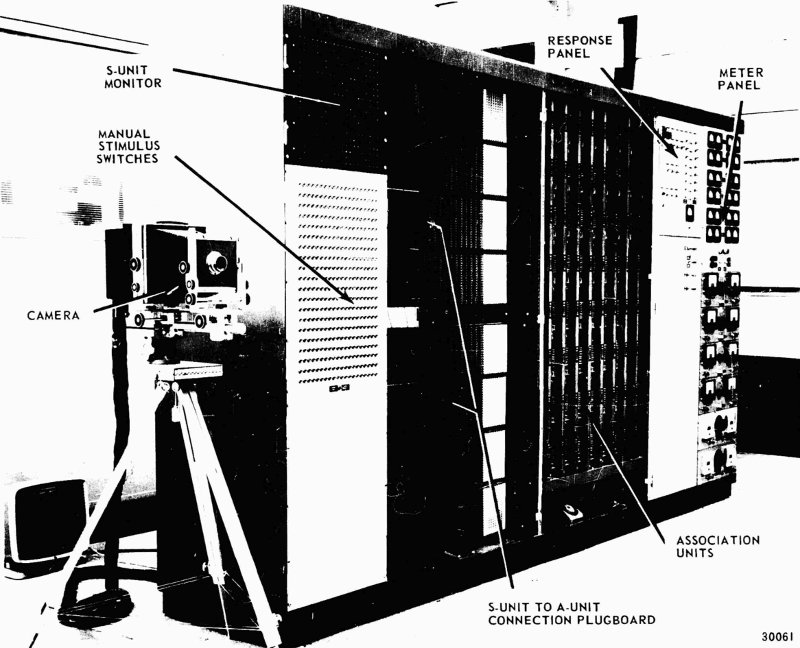

Rosenblatt (1958), «The perceptron: a probabilistic model for information storage and organization in the brain», Psychological Review 65(6).
1961Naive Bayes
M. E. Maron lo usa en 1961 para clasificar documentos por tema. Parte del teorema de Bayes, publicado en 1763.
Un clasificador probabilístico: calcula la probabilidad de cada clase con el teorema de Bayes, con la hipótesis de que las características son independientes entre sí dada la clase. Esa hipótesis es la parte «ingenua».
Por qué importa: muy usado en clasificación de texto, filtros de spam y procesamiento de lenguaje.
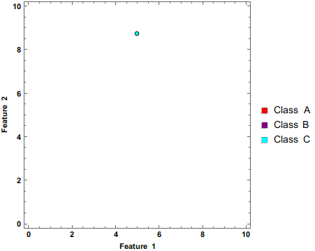

Maron (1961), «Automatic indexing: an experimental inquiry», Journal of the ACM 8(3).
1966Modelos ocultos de Márkov (HMM)
Leonard Baum y Ted Petrie, en 1966. En los años setenta, James Baker y Fred Jelinek los llevan al reconocimiento de voz.
Modelan una secuencia con estados que no se ven: cada estado pasa a otro con una probabilidad de transición y emite lo que sí se observa con una probabilidad de emisión.
Por qué importa: fueron fundamentales en reconocimiento de voz, bioinformática y lenguaje antes de las redes recurrentes.
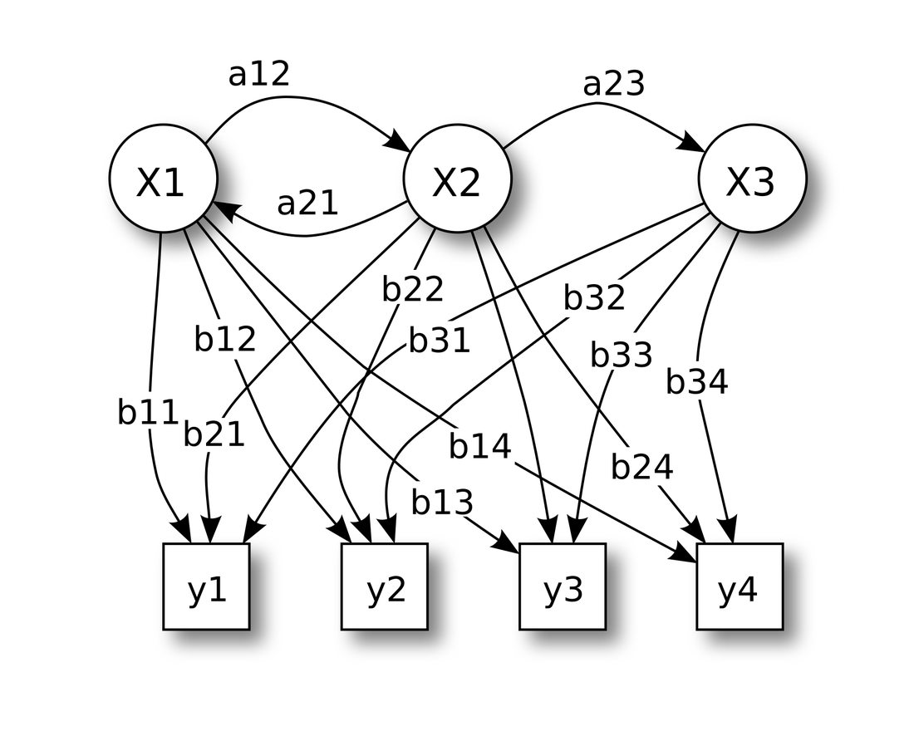

Baum y Petrie (1966), Annals of Mathematical Statistics 37(6) · Rabiner (1989), «A tutorial on hidden Markov models…», Proceedings of the IEEE 77(2).
1984Árboles de decisión (CART, ID3, C4.5)
CART, de Breiman, Friedman, Olshen y Stone (1984); ID3, de Ross Quinlan (1986), y su sucesor C4.5 (1993).
Construyen un árbol de decisiones con divisiones sucesivas del espacio de características: en cada paso eligen la pregunta que mejor separa las clases.
Por qué importa: se pueden leer y explicar, y son el fundamento de los bosques aleatorios y del gradient boosting.
En el cursoSesión 6, charla inicial y Laboratorio 6A.
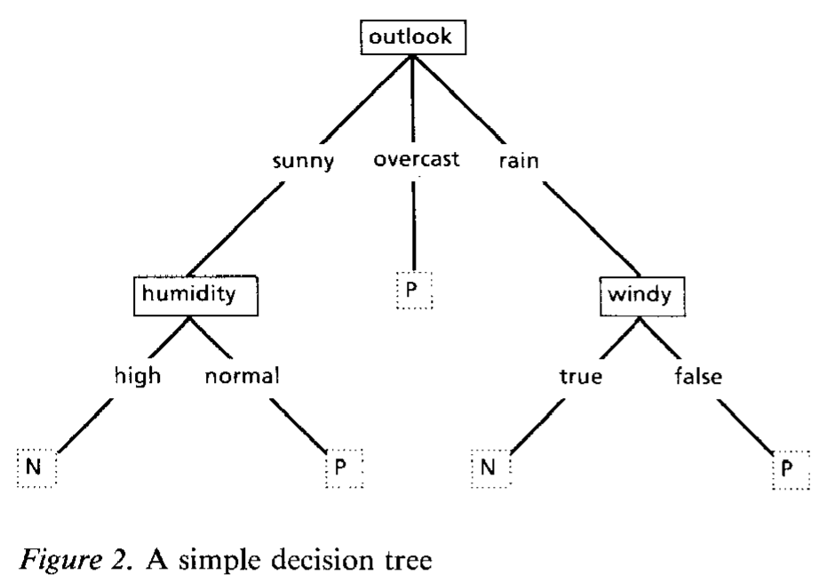
Breiman et ál. (1984), Classification and Regression Trees, Wadsworth · Quinlan (1986), «Induction of decision trees», Machine Learning 1(1) · Quinlan (1993), C4.5, Morgan Kaufmann.
1986Retropropagación (backpropagation)
La populariza el artículo de David Rumelhart, Geoffrey Hinton y Ronald Williams en Nature (1986). Tiene antecedentes en Seppo Linnainmaa (1970) y Paul Werbos (1974).
Calcula el gradiente de la función de pérdida respecto a cada peso, propagando el error desde la salida hacia atrás, capa por capa, con la regla de la cadena.
Por qué importa: hizo viable entrenar redes neuronales de varias capas; con ella se entrenan todavía.
En el cursoSesión 5, charla inicial y Laboratorio 5A.
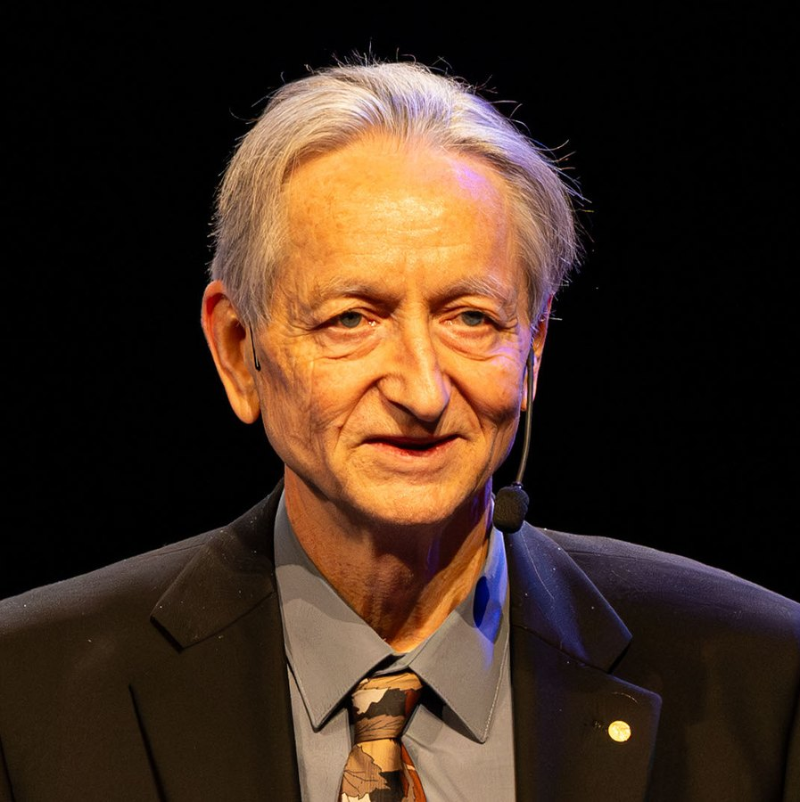
.jpg){kind=link}
Rumelhart, Hinton y Williams (1986), «Learning representations by back-propagating errors», Nature 323.
1989Q-learning
Chris Watkins, en su tesis doctoral en Cambridge (1989); con Peter Dayan demuestra su convergencia en 1992.
Aprende una función de valor de acción y estado, Q(s, a), probando y corrigiendo con la recompensa recibida, para encontrar la política que maximiza la recompensa.
Por qué importa: es uno de los algoritmos fundacionales del aprendizaje por refuerzo.
En el cursoSesión 6, charla intermedia y Laboratorio 6B.
Watkins (1989), Learning from delayed rewards, tesis doctoral, Universidad de Cambridge · Watkins y Dayan (1992), «Q-learning», Machine Learning 8.
1989Redes neuronales convolucionales (CNN)
Yann LeCun y colegas, en Bell Labs (1989), sobre el neocognitrón de Kunihiko Fukushima (1980). Le siguen LeNet-5 (1998), AlexNet (2012), VGG, GoogLeNet y ResNet.
Aprenden jerarquías de características espaciales mediante convoluciones: las primeras capas detectan bordes y las siguientes los combinan en partes y objetos.
Por qué importa: revolucionaron la visión por computador. AlexNet, en 2012, marcó un punto de inflexión en ImageNet.
En el cursoSesión 4, charla intermedia, y Sesión 5, charla inicial.
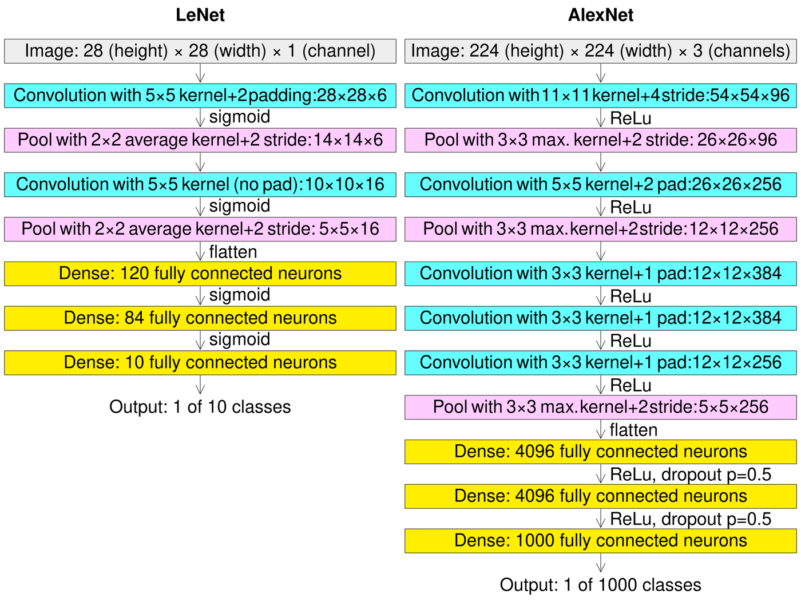

LeCun et ál. (1989), «Backpropagation applied to handwritten zip code recognition», Neural Computation 1(4) · Krizhevsky, Sutskever y Hinton (2012), NeurIPS 25.
1995Máquinas de vectores de soporte (SVM)
Corinna Cortes y Vladimir Vapnik (1995). El margen máximo con núcleos viene de Boser, Guyon y Vapnik (1992).
Encuentran el hiperplano que maximiza el margen entre las clases. Los núcleos permiten modelar fronteras no lineales.
Por qué importa: dominaron muchas aplicaciones de clasificación antes del auge del aprendizaje profundo.
En el cursoSesión 4, charla intermedia: el pipeline clásico de reconocimiento.
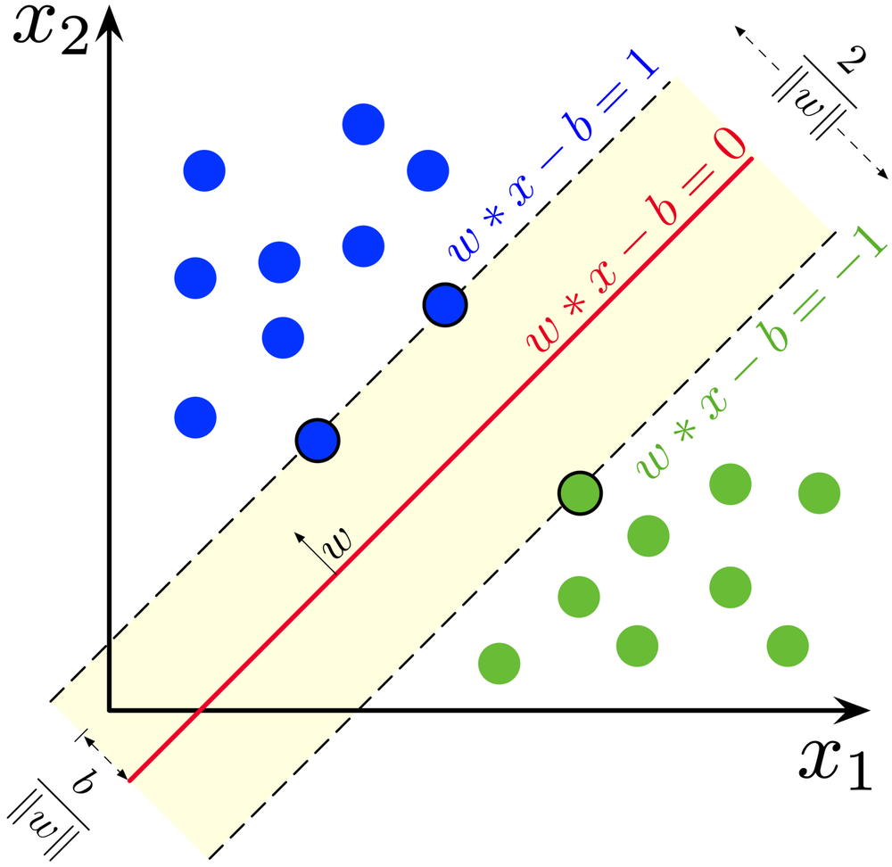

Cortes y Vapnik (1995), «Support-vector networks», Machine Learning 20(3) · Boser, Guyon y Vapnik (1992), COLT '92.
1995AdaBoost y gradient boosting
AdaBoost, de Yoav Freund y Robert Schapire (1995; versión de revista, 1997). Gradient boosting, de Jerome Friedman (2001). XGBoost lo llevó a la práctica en 2016.
Combinan modelos débiles para construir uno más potente: cada nuevo modelo corrige los errores de los anteriores.
Por qué importa: dieron origen a una de las familias más exitosas para datos estructurados.
En el cursoSesión 6, charla inicial y Laboratorio 6A.
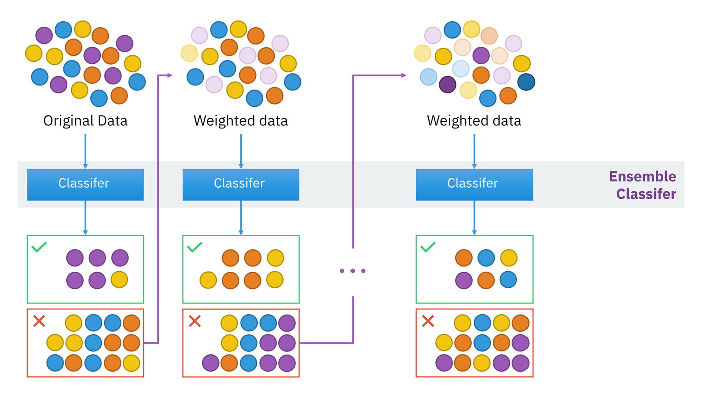

Freund y Schapire (1997), Journal of Computer and System Sciences 55(1) · Friedman (2001), «Greedy function approximation: a gradient boosting machine», Annals of Statistics 29(5).
1997RNN, LSTM y GRU
Las redes recurrentes de Michael Jordan (1986) y Jeffrey Elman (1990); la LSTM de Sepp Hochreiter y Jürgen Schmidhuber (1997); la GRU de Kyunghyun Cho y colegas (2014).
Redes que procesan secuencias paso a paso, con una memoria que pasa de un paso al siguiente. La LSTM y la GRU agregan compuertas que controlan qué información se guarda y cuál se olvida.
Por qué importa: procesamiento de lenguaje, series de tiempo y reconocimiento de voz.
En el cursoSesión 5, charla intermedia y Laboratorio 5B.
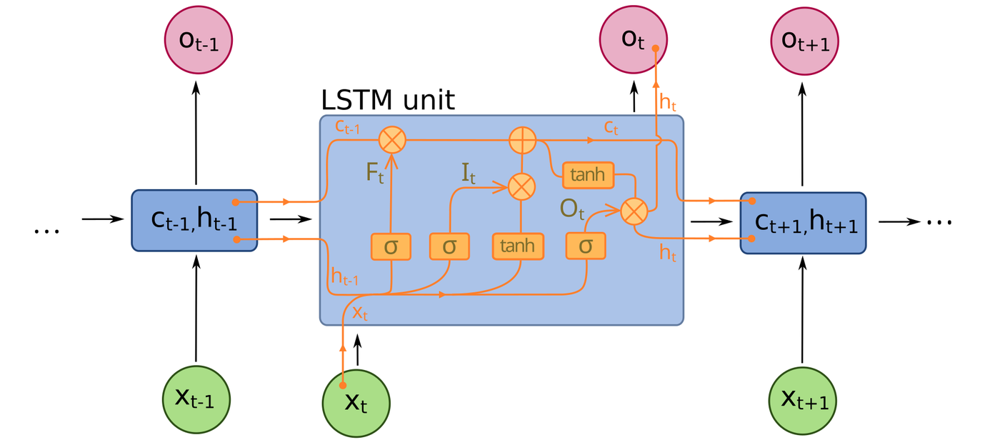

Hochreiter y Schmidhuber (1997), «Long short-term memory», Neural Computation 9(8) · Elman (1990), Cognitive Science 14(2) · Cho et ál. (2014), EMNLP.
2001Bosques aleatorios (random forest)
Leo Breiman (2001), sobre su bagging (1996) y los bosques de decisión aleatorios de Tin Kam Ho (1995).
Combinan muchos árboles, cada uno entrenado con una muestra aleatoria de los datos y con subconjuntos aleatorios de las características; deciden por votación.
Por qué importa: robustez, buen rendimiento y un desempeño excelente en datos tabulares.
En el cursoSesión 6, charla inicial («Muchos árboles votan») y Laboratorio 6A.
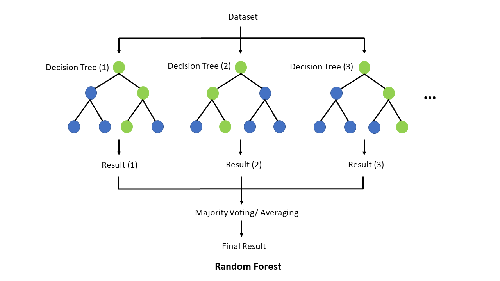

Breiman (2001), «Random forests», Machine Learning 45(1).
2014Redes generativas antagónicas (GAN)
Ian Goodfellow y colegas, en la Universidad de Montreal (2014).
Dos redes compiten: un generador produce muestras y un discriminador intenta distinguirlas de los datos reales. Cada una obliga a la otra a mejorar.
Por qué importa: generación de imágenes, síntesis de datos y transformación de dominios, por ejemplo de boceto a fotografía.
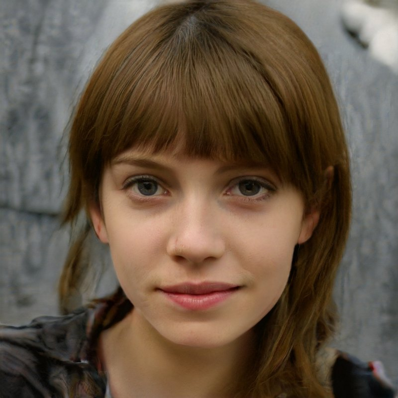

Goodfellow et ál. (2014), «Generative adversarial nets», NeurIPS 27 · Karras, Laine y Aila (2019), CVPR.
2014Mecanismo de atención
Dzmitry Bahdanau, Kyunghyun Cho y Yoshua Bengio (2014), para la traducción automática con redes recurrentes.
Permite que el modelo determine qué partes de una secuencia son relevantes para producir cada parte de la salida, en lugar de resumir toda la entrada en un solo vector.
Por qué importa: abrió el camino hacia los transformers.
En el cursoSesión 5, charla intermedia.


Bahdanau, Cho y Bengio (2015), «Neural machine translation by jointly learning to align and translate», ICLR; arXiv, 2014.
2015Modelos de difusión
Jascha Sohl-Dickstein y colegas (2015). Jonathan Ho, Ajay Jain y Pieter Abbeel los vuelven competitivos en 2020 (DDPM).
Aprenden a revertir un proceso de adición progresiva de ruido: parten de ruido puro y lo quitan paso a paso hasta obtener una imagen.
Por qué importa: revolucionaron la generación de imágenes y video.
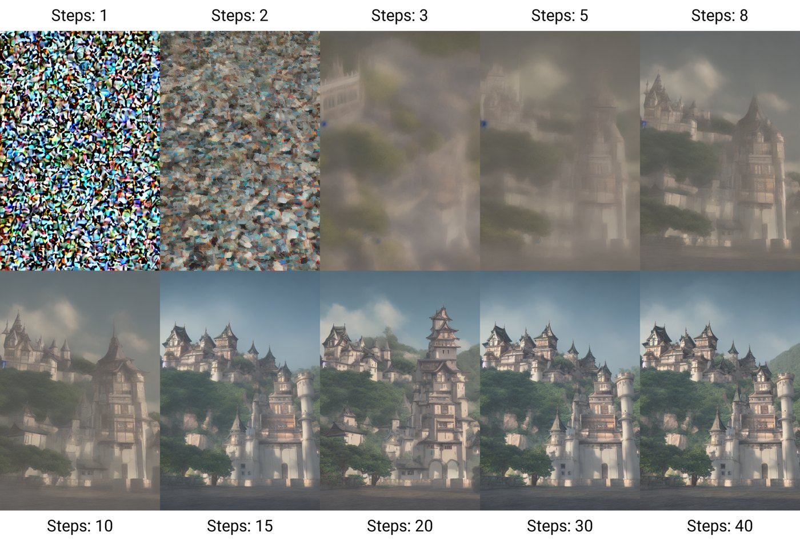

Sohl-Dickstein et ál. (2015), ICML, PMLR 37 · Ho, Jain y Abbeel (2020), «Denoising diffusion probabilistic models», NeurIPS 33.
2017Transformer
Ashish Vaswani y colegas, de Google, en el artículo «Attention is all you need» (2017).
Usa autoatención y procesamiento en paralelo para modelar las relaciones entre los elementos de una secuencia: cada elemento mira a todos los demás a la vez.
Por qué importa: es la arquitectura fundamental de GPT, BERT, T5 y prácticamente toda la revolución de los LLMs.
En el cursoSesión 5, charla intermedia y Laboratorio 5B.
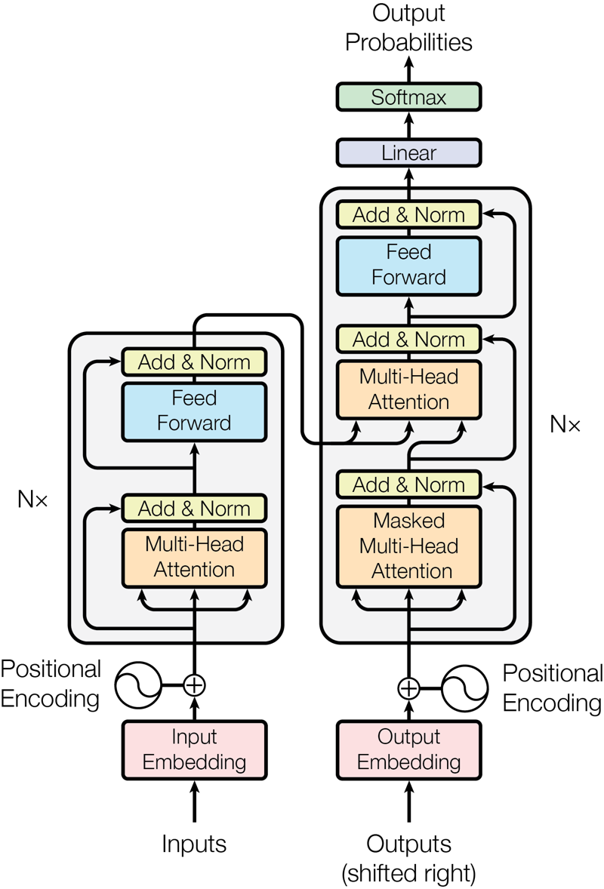
Vaswani et ál. (2017), «Attention is all you need», NeurIPS 30.
2018Modelado autorregresivo del lenguaje (GPT)
Alec Radford y colegas, de OpenAI (junio de 2018). Le siguen GPT-2 (2019) y GPT-3 (2020).
Predice el siguiente token a partir de los tokens anteriores; al generar, agrega el token elegido y vuelve a predecir.
Por qué importa: escalabilidad, generación de lenguaje y la aparición de los grandes modelos de lenguaje.
En el cursoSesión 5, charlas intermedia y de cierre; y los LLMs de todas las sesiones.
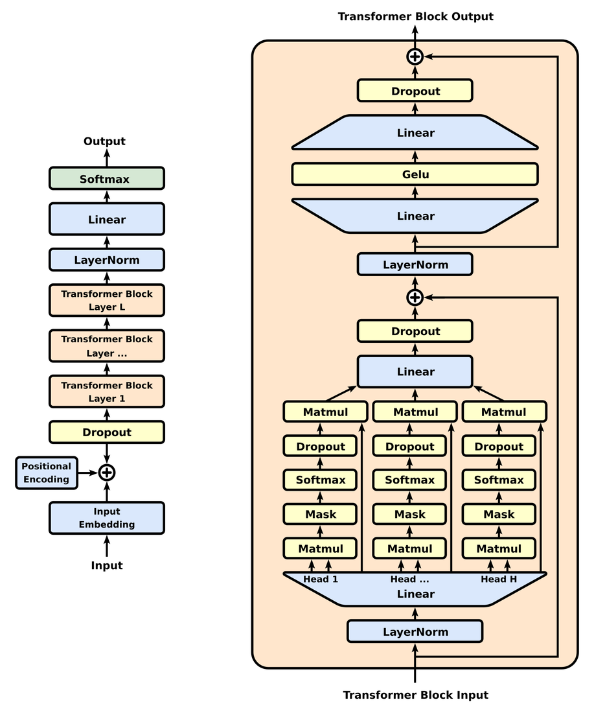

Radford et ál. (2018), «Improving language understanding by generative pre-training», OpenAI · Brown et ál. (2020), «Language models are few-shot learners», NeurIPS 33.
2018Modelado de lenguaje enmascarado (BERT)
Jacob Devlin y colegas, de Google (octubre de 2018).
Entrena al modelo para reconstruir tokens enmascarados dentro de un contexto bidireccional: mira las palabras a ambos lados del hueco.
Por qué importa: transformó el procesamiento de lenguaje con el esquema de preentrenar una vez y ajustar para cada tarea.
En el cursoSesión 5, charla intermedia: las tres familias del transformer.
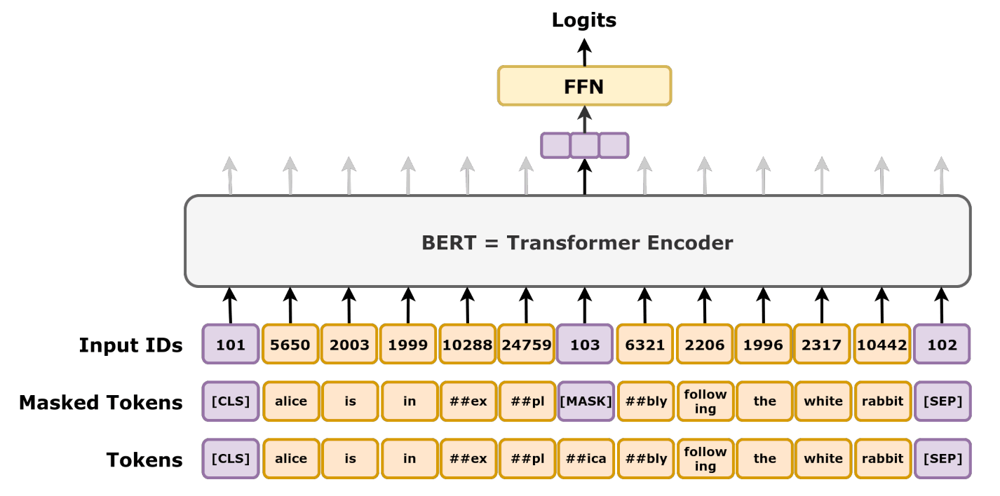

Devlin, Chang, Lee y Toutanova (2019), «BERT: pre-training of deep bidirectional transformers for language understanding», NAACL-HLT; arXiv, 2018.
2021LoRA (adaptación de bajo rango)
Edward Hu y colegas, de Microsoft (2021).
Ajuste fino eficiente: congela los pesos del modelo preentrenado y aprende solo una corrección de bajo rango, el producto de dos matrices delgadas, A y B.
Por qué importa: democratizó la adaptación de LLMs y de modelos grandes con recursos de cómputo limitados.
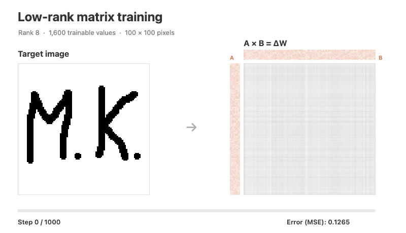

Hu et ál. (2022), «LoRA: low-rank adaptation of large language models», ICLR; arXiv, 2021.
Etapas 1 y 2, hasta las redes convolucionales
- Legendre, A.-M. (1805). Nouvelles méthodes pour la détermination des orbites des comètes. París · Galton, F. (1886). Regression towards mediocrity in hereditary stature. Journal of the Anthropological Institute 15, 246–263. DOI
- Pearson, K. (1901). On lines and planes of closest fit to systems of points in space. Philosophical Magazine 2(11), 559–572. DOI · Hotelling, H. (1933). Analysis of a complex of statistical variables into principal components. Journal of Educational Psychology 24(6), 417–441. DOI
- Fix, E. y Hodges, J. L. (1951/1989). Discriminatory analysis. Nonparametric discrimination: consistency properties. International Statistical Review 57(3), 238–247. DOI · Cover, T. y Hart, P. (1967). Nearest neighbor pattern classification. IEEE Transactions on Information Theory 13(1), 21–27. DOI
- Lloyd, S. P. (1982). Least squares quantization in PCM. IEEE Transactions on Information Theory 28(2), 129–137. DOI · MacQueen, J. (1967). Some methods for classification and analysis of multivariate observations. Proceedings of the 5th Berkeley Symposium 1, 281–297
- Rosenblatt, F. (1958). The perceptron: a probabilistic model for information storage and organization in the brain. Psychological Review 65(6), 386–408. DOI
- Maron, M. E. (1961). Automatic indexing: an experimental inquiry. Journal of the ACM 8(3), 404–417. DOI
- Baum, L. E. y Petrie, T. (1966). Statistical inference for probabilistic functions of finite state Markov chains. Annals of Mathematical Statistics 37(6), 1554–1563. DOI · Rabiner, L. R. (1989). A tutorial on hidden Markov models and selected applications in speech recognition. Proceedings of the IEEE 77(2), 257–286. DOI
- Breiman, L., Friedman, J., Olshen, R. y Stone, C. (1984). Classification and Regression Trees. Wadsworth. DOI · Quinlan, J. R. (1986). Induction of decision trees. Machine Learning 1(1), 81–106. DOI · Quinlan, J. R. (1993). C4.5: Programs for Machine Learning. Morgan Kaufmann
- Rumelhart, D. E., Hinton, G. E. y Williams, R. J. (1986). Learning representations by back-propagating errors. Nature 323, 533–536. DOI
- Watkins, C. J. C. H. (1989). Learning from delayed rewards. Tesis doctoral, Universidad de Cambridge · Watkins, C. J. C. H. y Dayan, P. (1992). Q-learning. Machine Learning 8, 279–292. DOI
- LeCun, Y. et ál. (1989). Backpropagation applied to handwritten zip code recognition. Neural Computation 1(4), 541–551. DOI · Krizhevsky, A., Sutskever, I. y Hinton, G. E. (2012). ImageNet classification with deep convolutional neural networks. NeurIPS 25
De las SVM a LoRA
- Cortes, C. y Vapnik, V. (1995). Support-vector networks. Machine Learning 20(3), 273–297. DOI · Boser, B. E., Guyon, I. M. y Vapnik, V. N. (1992). A training algorithm for optimal margin classifiers. COLT '92, 144–152. DOI
- Freund, Y. y Schapire, R. E. (1997). A decision-theoretic generalization of on-line learning and an application to boosting. Journal of Computer and System Sciences 55(1), 119–139. DOI · Friedman, J. H. (2001). Greedy function approximation: a gradient boosting machine. Annals of Statistics 29(5), 1189–1232. DOI
- Hochreiter, S. y Schmidhuber, J. (1997). Long short-term memory. Neural Computation 9(8), 1735–1780. DOI · Elman, J. L. (1990). Finding structure in time. Cognitive Science 14(2), 179–211. DOI · Cho, K. et ál. (2014). Learning phrase representations using RNN encoder–decoder for statistical machine translation. EMNLP. arXiv
- Breiman, L. (2001). Random forests. Machine Learning 45(1), 5–32. DOI
- Goodfellow, I. et ál. (2014). Generative adversarial nets. NeurIPS 27. arXiv · Karras, T., Laine, S. y Aila, T. (2019). A style-based generator architecture for generative adversarial networks. CVPR. arXiv
- Bahdanau, D., Cho, K. y Bengio, Y. (2015). Neural machine translation by jointly learning to align and translate. ICLR. arXiv
- Sohl-Dickstein, J. et ál. (2015). Deep unsupervised learning using nonequilibrium thermodynamics. ICML, PMLR 37. arXiv · Ho, J., Jain, A. y Abbeel, P. (2020). Denoising diffusion probabilistic models. NeurIPS 33. arXiv
- Vaswani, A. et ál. (2017). Attention is all you need. NeurIPS 30. arXiv
- Radford, A. et ál. (2018). Improving language understanding by generative pre-training. OpenAI · Brown, T. et ál. (2020). Language models are few-shot learners. NeurIPS 33. arXiv
- Devlin, J., Chang, M.-W., Lee, K. y Toutanova, K. (2019). BERT: pre-training of deep bidirectional transformers for language understanding. NAACL-HLT, 4171–4186. arXiv
- Hu, E. J. et ál. (2022). LoRA: low-rank adaptation of large language models. ICLR. arXiv